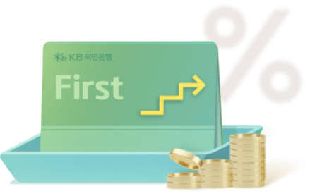
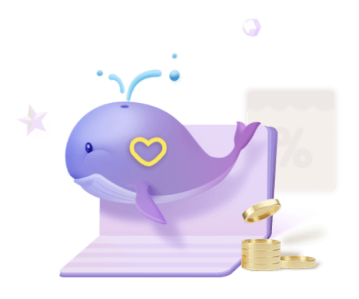
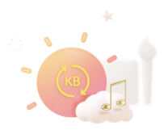

Overview
신규고객 유입 및 기존 고객 이탈방지를 위해 KB스타뱅킹 금융상품몰을 개편하였습니다. 본래 전통적이고 딱딱한 금융상품몰이 고객들의 관심을 끌 수 있도록 직관적이고 역동적인 콘텐츠로 새로운 고객경험 제공하였습니다. 또한, 쉬운 상품 가입을 유도할 수 있도록 콘텐츠 프로세스를 간소화하였습니다.


Project Approach
UX Strategy Structure
KB스타뱅킹은 Full-Banking이 지향해야 하는 포괄적 타겟을 위한 UX를 설계해야 합니다. 다양성(Universal experience)을 수용하면서도 개별성(Unique experience)을 지향하는 Global UX 전략을 제안했습니다.
Unique Experience
Universal Experience
지향하는 Global UX B. Unique Experience
- 정보 탐색 및 발견이 가능한 노드(Node)형 UX 설계
- 금융 트렌드를 볼 수 있는 랭킹 기반 서비스 디자인
- 개인화에 특화된 넛지형 디자인
- 동영상, 인포그래픽의 활용을 통해 상품 USP를 직관적으로
이해 할 수 있는 정보 디자인
- 목적지향적 고객, 니즈가 명확한 고객의 빠른 거래를 지원
- KB스타뱅킹의 UX가이드 및 디자인 톤앤무드의 계승
- 검색 중심의 거래 유도
- 상품 가입 프로세스 슬림화 - 거래 흐름이 자연스러운 선형적
인 프로세스 플로우 수립
Design
메인화면
카테고리에 맞는 이미지를 활용하고 대표 컬러를 지정하였습니다.
심플하고 직관적인 디자인으로 부드러운 무드를 선보였습니다.


상품검색
상품 검색 시 메안 테마 컬러와 연결하였으며, 상품을 카드형 UI와 테이블을 통해 균형감있게 보이도록 정리하였습니다.


시각화
정보의 시각화를 통해 상품의 이해도를 높였습니다.
더불어, 모션을 활용해 생동감 있는 디자인을 전달하였습니다.





Project Retrospective
유플리트는 프로젝트가 종료되면 회고하는 시간을 가집니다. 함께 들어볼까요?
프로젝트를 진행하면서 얻으신 인사이트를 공유해주신다면?
프로젝트를 하면서 수행 팀 간의 회의를 통한 대략적인 가이드를 만들 필요가 있었습니다. 그래서 저희는 프로세스에 쓰이는 공통 컴포넌트에 대한 기존 소스를 분석하고 정리하였고, 그 후 부분적으로 공통 가이드에 대한 요청을 하여 진행을 했습니다. 이러한 사전 협의를 통한 가이드를 만들어 프로젝트를 진행하면 수행 팀 모두가 혼란에 빠지지않고 확실하게 프로젝트를 마무리 할 수 있습니다.